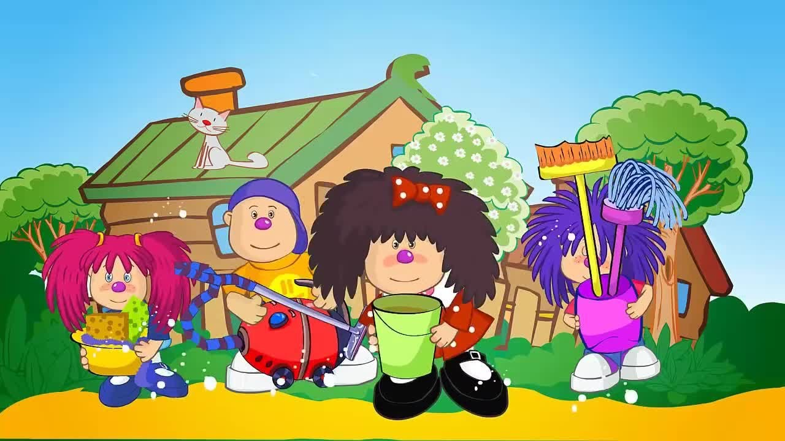

Барбарики — московская детская вокальная группа, основанная Виталием Осошником, в прошлом художественным руководителем группы «Волшебники двора». Особенность «Барбариков» — к ней прилагается мультсериал «Лёлик и Барбарики» с разными персонажами, которых изображают участники группы, исполняя детские песни, как новые, так и перепевки. Большинство этих персонажей живет на выдуманной планете Барбарелла.«Лёлик и Барбарики» — рисованный мультипликационный мультсериал по мотивам Леона Бара и Владимира Сакова. Премьера состоялась в России в 2008 году 25 августа в рамках телепередачи «Спокойной ночи, малыши!» на канале «Россия-1».
